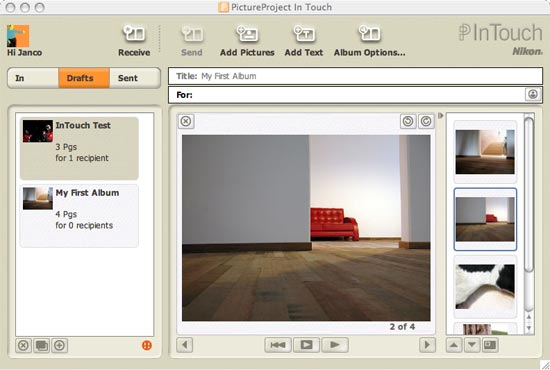

PictureProject InTouch
NikonNet has launched a new member to the PictureProjec family of tools. As I had never used PictureProject — still using NikonView — I though of giving it a try with the Max OS-X version. The idea of the tool is that you can create albums with pictures and share these with other people without using mail or going to a website. I had not much luck the first time using the product as I made it hanging trying to send before I had an activated account on NikonNet. Anyway, doing things in the right sequence made it work.
The look and feel of the program is nice with a subtile color scheme. It only has a few options that make it indeed easy to use. New albums can be automatically received after login into the “In” folder. Other folders are “Sent” and “Drafts”. The draft folder is used to create you albums and they are moved to sent as soon as you have sent them to someone. Albums can be viewed as full screen slide show. There is also an option to insert “text” slides. These slides have a bit of text where text, background color and basic font type (serif or sans-serif, bold, italic and size) can be altered.
A negative point is that it took me quite some time before I could activate my account! Before I activated it I was able to request a new password. After that I received both mails with activation and new password. Unfortunately, requesting a new password was a wrong decision as it made my activation invalid. The bottom line problem is that it takes way too long before the mails are sent. In my case it was around 30 minutes. With other sites you get a confirmation mail almost instantaneous — as soon as you hit the submit button!
This utility adds to Nikon’s strategy that software is the major important thing in digital photography! You see additional plugins to PictureProject, like DVD-show. But also new enhancements in firmware like Face priority auto focus.
Comments
Post a comment
XHTML, CSS, RSS feeds. Powered by Movable Type. Hosted @Home with a domain by hostway.
Use the form below to add your relevant comments, suggestions. Be aware that I reserve the right to edit any raw language, abusive and/or inappropriate comments that's too far off topic or remove it all together.